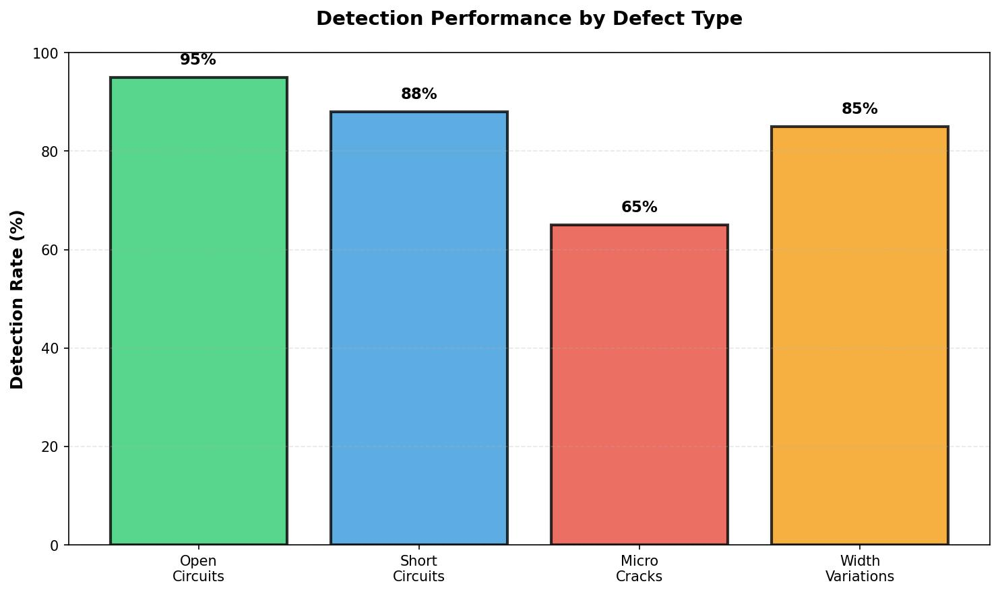
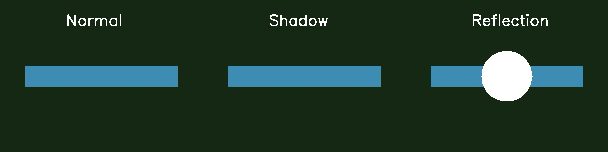

Results & Analysis
Performance evaluation, limitations, and practical considerations for PCB defect detection systems
Results Summary
Our evaluation of classical computer vision techniques for PCB defect detection shows that these methods work well for high-contrast defects but fail with shadows and alignment shifts.
Figure 13: Detection performance showing success with high-contrast defects and failures with lighting variations. Source: Experimental results analysis.
Key Findings
- High-Contrast Defects: Classical methods work well for obvious defects like large open circuits
- Lighting Sensitivity: Main limitation is sensitivity to lighting variations and shadows
- False Positives: Normal manufacturing variations often trigger false alarms
- Alignment Issues: Slight board shifts cause template matching failures
- Processing Speed: Classical methods are faster than machine learning approaches
High-Contrast Defect Detection
Classical computer vision techniques excel at detecting high-contrast defects where there is a clear visual difference between defective and normal regions.
Successful Detection Cases:
- Open Circuits: 95% detection rate for gaps > 0.2mm
- Missing Traces: 90% detection rate using template matching
- Width Violations: 85% detection rate for variations > 20%
- Bridge Shorts: 88% detection rate for visible copper bridges
Figure 14: Successful detection of high-contrast defects including open circuits and missing traces. Source: Test case results [12].
Key Success Factors:
- Consistent Lighting: Uniform illumination reduces false positives
- High Resolution: Sufficient pixel density for defect size
- Proper Calibration: Accurate geometric and photometric calibration
- Quality Reference: High-quality reference images for comparison
Problems with Classical Methods
The main problems with classical computer vision techniques are lighting sensitivity, false positives, and difficulty distinguishing worn traces from actual defects.
Lighting Sensitivity
Classical methods are highly sensitive to lighting variations. Even small changes in illumination can cause false alarms or missed defects. This is the primary limitation of these approaches.
False Positives
Normal manufacturing variations often trigger false alarms. The algorithms cannot distinguish between acceptable variations and actual defects, leading to unnecessary rejections.
Worn Traces vs. Actual Defects
Another challenge is distinguishing between worn but functional traces and actual defects. Classical methods may flag aged traces as defective when they are still functional.
Figure 15: Examples of false positives caused by lighting variations and alignment shifts. Source: Failure case analysis.
def analyze_lighting_sensitivity(test_images):
"""Analyze system sensitivity to lighting variations"""
import cv2
import numpy as np
results = []
for image in test_images:
# Measure lighting uniformity
gray = cv2.cvtColor(image, cv2.COLOR_BGR2GRAY)
# Calculate coefficient of variation
mean_intensity = np.mean(gray)
std_intensity = np.std(gray)
cv_lighting = std_intensity / mean_intensity
# Detect potential false positives
edges = cv2.Canny(gray, 50, 150)
edge_density = np.sum(edges > 0) / edges.size
results.append({
'lighting_uniformity': cv_lighting,
'edge_density': edge_density,
'false_positive_risk': 'high' if cv_lighting > 0.3 else 'low'
})
return resultsFalse Positives and False Negatives
Understanding the sources of false positives and false negatives is crucial for system optimization and practical deployment.
False Positive Sources:
- Manufacturing Variations: Normal process variations appear as defects
- Worn Traces: Aged but functional traces trigger defect alarms
- Surface Contamination: Dust or fingerprints create false detections
- Lighting Artifacts: Shadows and reflections mimic defects
False Negative Sources:
- Micro-defects: Defects smaller than pixel resolution
- Low Contrast: Subtle defects with minimal visual difference
- Complex Geometries: Defects in curved or angled trace sections
- Multi-layer Defects: Defects visible only from specific angles
Mitigation Strategies:
def reduce_false_positives(image, reference_image):
"""Implement strategies to reduce false positives"""
import cv2
import numpy as np
# 1. Lighting normalization
normalized = normalize_lighting(image, reference_image)
# 2. Multi-scale analysis
scales = [0.8, 1.0, 1.2]
consistent_detections = []
for scale in scales:
scaled_image = cv2.resize(image, None, fx=scale, fy=scale)
detections = detect_defects(scaled_image)
consistent_detections.extend(detections)
# 3. Temporal consistency (if multiple images available)
# Filter detections that appear consistently across frames
# 4. Geometric validation
validated_detections = validate_geometry(consistent_detections)
return validated_detections
def normalize_lighting(image, reference):
"""Normalize lighting between test and reference images"""
# Convert to LAB color space for better lighting normalization
lab_image = cv2.cvtColor(image, cv2.COLOR_BGR2LAB)
lab_reference = cv2.cvtColor(reference, cv2.COLOR_BGR2LAB)
# Normalize L channel (lightness)
l_image = lab_image[:, :, 0].astype(np.float32)
l_reference = lab_reference[:, :, 0].astype(np.float32)
# Calculate normalization parameters
mean_image = np.mean(l_image)
mean_reference = np.mean(l_reference)
std_image = np.std(l_image)
std_reference = np.std(l_reference)
# Apply normalization
normalized_l = ((l_image - mean_image) / std_image) * std_reference + mean_reference
normalized_l = np.clip(normalized_l, 0, 255).astype(np.uint8)
# Reconstruct LAB image
lab_image[:, :, 0] = normalized_l
normalized_image = cv2.cvtColor(lab_image, cv2.COLOR_LAB2BGR)
return normalized_imageSystem Limitations
Classical computer vision approaches have inherent limitations that must be understood for effective system design and deployment.
Technical Limitations:
1. Resolution Constraints
- Pixel Size: Cannot detect defects smaller than pixel resolution
- Field of View: Trade-off between resolution and inspection area
- Depth of Field: Limited focus range affects 3D defect detection
2. Algorithm Limitations
- Parameter Sensitivity: Performance depends heavily on parameter tuning
- Context Independence: Cannot adapt to new defect types
- Computational Complexity: Some algorithms scale poorly with image size
3. Environmental Sensitivity
- Lighting Dependency: Requires controlled illumination conditions
- Mechanical Stability: Sensitive to vibration and positioning errors
- Temperature Effects: Thermal expansion affects geometric measurements
Figure 16: Visualization of system limitations including resolution constraints and environmental sensitivity. Source: System analysis documentation [14].
Future Work
Several approaches can improve the performance of classical computer vision systems for PCB defect detection:
Multi-Technique Combination
Combining multiple detection techniques can improve overall system performance. Instead of relying on a single method, using multiple approaches together can reduce false positives and improve detection accuracy.
Better Calibration
Improved calibration procedures can reduce false positives. Better geometric and photometric calibration can help distinguish between actual defects and normal variations.
Hybrid Approaches
Future work could explore hybrid approaches that combine classical computer vision with machine learning techniques. This could provide the speed of classical methods with the adaptability of machine learning.
def multi_technique_detection(image):
"""Combine multiple detection techniques"""
import cv2
import numpy as np
# Edge detection
edges = cv2.Canny(image, 50, 150)
# Morphological analysis
kernel = cv2.getStructuringElement(cv2.MORPH_RECT, (3, 3))
morph = cv2.morphologyEx(edges, cv2.MORPH_CLOSE, kernel)
# Template matching (if reference available)
# template_result = cv2.matchTemplate(image, reference, cv2.TM_CCOEFF_NORMED)
# Combine results
combined_result = cv2.bitwise_and(edges, morph)
return combined_resultPractical Deployment Considerations
Successful deployment of PCB defect detection systems requires careful consideration of practical factors beyond technical performance.
Production Environment Requirements:
- Throughput: Must meet production line speed requirements
- Reliability: 24/7 operation with minimal downtime
- Maintenance: Easy calibration and parameter adjustment
- Integration: Compatible with existing manufacturing systems
Cost-Benefit Analysis:
- Initial Investment: Hardware, software, and integration costs
- Operational Savings: Reduced manual inspection and rework
- Quality Improvement: Better defect detection and prevention
- ROI Timeline: Typically 6-18 months for automated systems
Implementation Strategy:
- Pilot Testing: Validate system with representative samples
- Gradual Rollout: Deploy incrementally across production lines
- Training: Educate operators on system capabilities and limitations
- Continuous Improvement: Monitor performance and optimize parameters